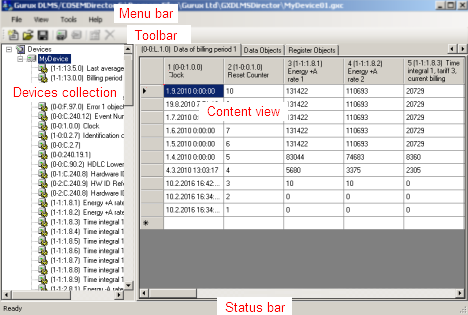
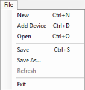
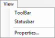
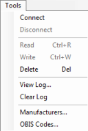
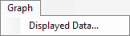
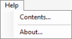

|
Gurux GXDLMS/COSEMDirector |
|
User Interface
GXDLMS/COSEMDirector User Interface

| |
- Menu bar holds the menus.
- Toolbar holds shortcut icons to most common commands.
- Devices collection lists the available items (Collection, Devices or Registers).
- Content view shows the properties and / or value(s) of the selected item.
- Status bar holds a ProgressBar to display the progress of the operation, when retrieving registers, or reading values from a physical device.
|
Menus

| |
File menu
- To create a new collection of Devices, select New.
- To add a Device in collection of Devices, select AddDevice.
- To open an existing collection of Devices, select Open.
- To save the current collection of Devices, select Save.
- To save the current collection of Devices on a different name or to a different location, select Save As...
- To retrieve the register objects of selected Collection or Device, select Refresh.
- To exit the application, select Exit.
|

| |
View menu
- To view / hide the toolbar, select / unselect ToolBar.
- To view / hide the statusbar, select / unselect StatusBar.
- To view / edit the properties of selected Collection or Device, select Properties...
|

| |
Tools menu
- To connect to selected Collection or Device, select Connect.
- To disconnect from selected Collection or Device, select Disconnect.
- To get the values of selected Collection or Device, select Read.
- To write value(s) of selected Data Object, select Write.
- To remove selected Device or Register from the list, select Delete.
- To view the Log as a text file, select View Log.
Note: The text file does not update, it only shows the current rows of the Log.
- To erase the rows of the Log, select Clear Log.
- To view / edit / add device manufacturers, select Manufacturers...
- To view / edit OBIS codes, select OBIS codes...
|

| |
Graph menu holds the command for displaying the Graph Items of the selected Object.
|

| |
Help menu holds commands for opening
- this manual (Contents...), and
- the application information box (About...).
|
Shortcut Icons on GXDLMS/COSEMDirector ToolBar
To create a new collection of Devices, click the New button.
| |
|
To open an existing collection of Devices, click the Open button.
| |
|
To save the current collection of Devices, click the Save button.
| |
|
To connect to / disconnect from selected Collection or Device,
click the Connect button.
| |
|
To get the values of selected Collection or Device,
click the Read button.
| |
|
To write the value(s) of selected Data Object,
click the Write button.
| |
|
To view / edit the properties of selected Collection or Device,
click the Properties button.
| |
|
To remove selected Device or Register from the list,
click the Delete button.
| |
|
Content views of selected items
Various data is shown in the content view, according to, what kind of an item is selected in the collection of Devices.
Selecting the collection shows a list of Devices in the collection.
Selecting a Device shows data tables, data objects, and register objects of the selected device, each on its own tab.
Selecting a Table shows the data table. Also the values in a data table are displayed, if they have been read.
Selecting a single Register shows the type of the value, logical name of the register, and description of the register.
Also the value of the register is displayed, if it has been read.